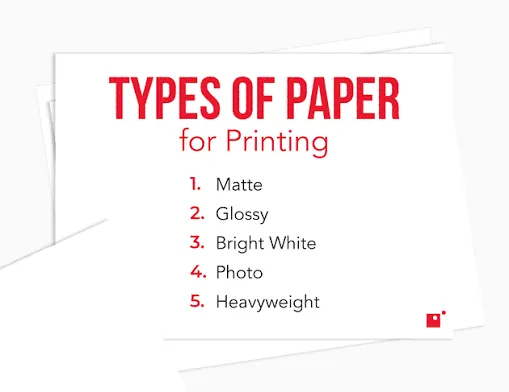
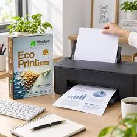

Printers
How to Choose the Right Printer Paper for Documents, Photos and Presentations
Learn how paper weight, finish, brightness, size and printer compatibility affect results for everyday documents, photographs and presentations.
Introduction: Paper Is Part of Print Quality
Selecting a quality printer paper can impact the quality of your finished prints. Choosing the right paper will ensure your print is sharp, coloured, dries quickly and feeds through your printer reliably. You may find different papers are needed depending on whether you are printing an invoice, photograph, brochure or presentation.
Paper can come in many varieties, it will have different weights, thicknesses, finishes, brightness and coatings. Make sure you select the correct paper for your printer and what you are printing. Check your printer’s media options and select a quality paper relevant to your print.

1. Select the Correct Paper for your Printer
Inkjet printers use liquid ink to print your documents. Inkjet papers are designed to absorb and retain the ink effectively. While regular copy paper can be used for text, photographs and coloured graphics often look better on a coated inkjet paper to help control bleeding and increase detail.
Laser printers use toner powder which is melted onto the paper. The paper needs to withstand the heat from the printer. Not all inkjet coated papers are suitable for laser printers. Check the packaging for what printers are suitable and follow the manufacturer guidelines for what media they recommend.

2. Know the Weight
Paper is often measured in grammes per square meter (gsm). Standard office paper will often be 70-80gsm. Thicker papers can be used for reports, covers and presentations. The higher the number the thicker the paper will be. However the thickness can vary depending on how it is made.
Don’t just go for a heavier paper. Ensure you are within your printer’s weight range and check your trays. Very thick media may need to be inserted into the manual feed or rear feed. Inserting media that your printer does not support may cause jams, poor fusing on a laser printer or uneven ink absorption on an inkjet printer.
3. Plain Paper for Regular Print
Multipurpose plain paper is a good option for regular printing. This can include emails, invoices, forms, notes and reports. It is usually an affordable option and readily available. As most of these documents will contain text, it is usually more important to have a good quality paper that will feed through your printer reliably.
If you have charts/coloured graphics, consider upgrading to a quality office paper. This can help your text to look cleaner and colours to be more consistent. Try printing a small amount first to ensure you are happy with the paper. If you will be using this for an important regular project, try printing a small amount first.
4. Photo Paper for Photographs
Photo paper is designed to give you more detail, colour and contrast in your prints. There are many finishes available including glossy, semi-gloss, satin and matte. Glossy papers can give you vibrant colours. Matte papers can limit glare and may work better for framed images or designs.
Ensure you’re using photo paper that will work with your printer. Within your print settings select the correct paper type. This will affect how the ink is applied. If you do not select the right option, you may experience smudging, dull colours or too much ink. Allow your prints to dry/cure as advised by the manufacturer before stacking or framing.
5. Presentation Papers
Often presentation papers will look more premium. Using a heavier matte or satin paper can give your reports, handouts and proposals a more premium look whilst still being easy to read in an office environment. Glossy papers may be useful for marketing images, however they can cause glare from overhead lights making it harder to read text.
Think about how you’ll be using your document. If it is going to be handed out at a meeting it should be durable. If it is going to be printed for reference within the office, you may not need a premium paper. Choose a finish that will help you to read the document.
6. Check the Size
A4 is widely used in many countries for office documents. However you may be printing a different size for letters, labels, envelopes or photos. Ensure the paper in your tray matches the size you’ve chosen for your document. If it does not match, you may experience cropped prints, scaling issues or feeding problems.
When printing envelopes or labels, ensure you are using the correct feed path. Follow the diagrams to insert the media correctly. Not all printers will take all envelopes/labels. Check the maximum size of media, printable area and tray instructions.
7. Brightness and Opacity
Brightness relates to how much light is reflected off the paper. Whiteness relates to the shade of the paper. A bright paper can give your black text more definition. However brightness and whiteness are not the same. Different manufacturers may measure their paper differently. Try comparing samples in the light you’ll be viewing your documents in.
When printing double sided, you want to ensure the paper is not too thin so text/images do not show through. If you need to print double sided, choose a suitable weight and opacity. Try printing a sample of the paper with a typical document.
8. Store Correctly
Paper can absorb moisture from the air. This can cause the paper to curl, stick together or feed inconsistently. Very dry paper can cause more static. Store your paper flat in its packaging in a clean, dry environment. Avoid direct sunlight, heaters and spillages.
Only insert the amount of paper your printer recommends. Don’t leave any spare paper in the tray for long periods of time in humid/dusty environments. If the paper has curled, is damp or damaged, replace it.
9. Select the Correct Settings
Ensure you have the correct paper type selected in your print settings. This could include plain paper, matte photo paper, glossy photo paper, labels or envelopes. Depending on your device, this can affect how the ink is applied, how fast it prints, how the fuser works etc.
If your print is too dark, smudged or not fusing well, ensure you have the correct paper and settings selected. Ensure you have the right size, source tray and quality. Take note of the settings that work well so you can recreate them for regular printing projects.
10. Try a Sample
Print a sample of your presentation, brochure or photos. This will ensure your colours look good, everything is lined up, easy to read, has dried and feeds through. Printing a sample will help you avoid wasting resources.
If you’re printing something important for business/event, try a few different papers and finishes in realistic lighting. Keep the sample with the packaging information so you can order the same again. It is important to have consistency.
Conclusion
Choosing the correct printer paper will depend on your printer, what you’re printing and what you’re using it for. Plain paper is great for regular printing, photo paper can improve your images and heavier papers for presentations can give your reports a more premium look. Ensure you have the correct weight, finish, size, opacity and compatible paper. Select the correct settings in your driver. The best way to ensure you have the correct paper is to print a sample..
Need a hand with your printer or laptop?
Printerworld sells printers, laptops and genuine supplies, and repairs and services both. Bring in your model number and we will help you get it right.